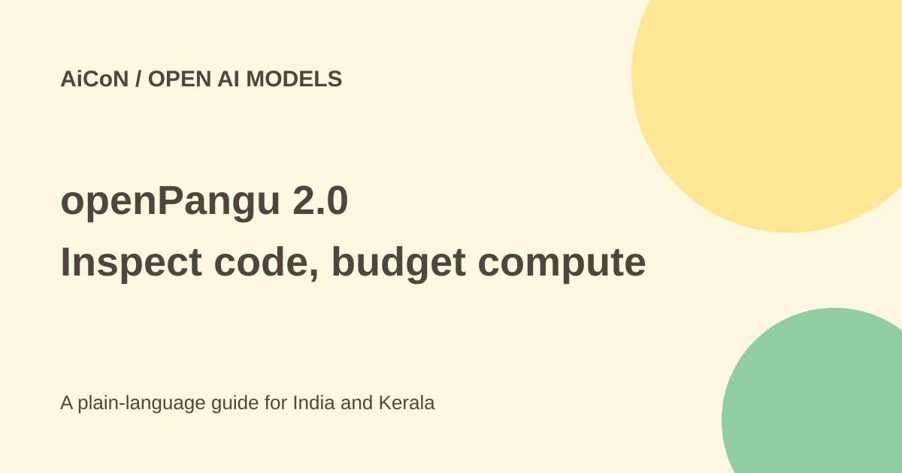

openPangu 2.0: training code, licences and Ascend limits
Huawei has published more of openPangu 2.0's training code. That makes the recipe easier to inspect, but it does not prove that anyone can cheaply reproduce the original model.

What did Huawei release?
Huawei's official 28 September 2026 announcement says openPangu 2.0 pretraining, supervised fine-tuning and reinforcement-learning post-training code is public. The Training and RL projects serve different stages of building a model.
Pretraining teaches patterns from large amounts of data. Supervised fine-tuning, or SFT, adds example tasks and answers. Reinforcement learning, or RL, adjusts behaviour using a reward or evaluation signal. A release covering these stages is useful for research, but each stage still needs data, hardware and configuration.
Training and RL are separate projects
Huawei describes openPangu-2.0-Training as a framework for large-model pretraining and SFT, with distributed parallelism, data pipelines, mixed precision and custom operators. The current repository identifies a PyTorch and CANN-based framework.
The RL project is described as an Ascend-native framework built on the VERL ecosystem for agentic post-training. Start with the exact repository matching your task. A model-weight download is not the same thing as its training service or its dependencies.
Pro and Flash model sizes
The Pro model card describes roughly 505 billion total parameters with about 18 billion active per token, a 512K context and around 34 trillion training tokens. The Flash card describes roughly 92 billion total and six billion active parameters, also with a 512K context and about 34 trillion training tokens.
These are developer-published specifications. In a mixture-of-experts model, only part of the network may compute for each token, but the full weights still need to be stored and served. An 18B active count does not mean a 505B model has the same memory needs as a dense 18B model.
Hardware: Ascend is central
The official announcement and model cards describe the release as Ascend-native. The Training project uses Huawei's CANN ecosystem, and the RL framework is built for Ascend training and deployment.
Do not assume it is a drop-in GPU-cluster replacement. A team using another accelerator stack needs to check operators, precision support, distributed training and inference compatibility. This guide did not run the code or verify a GPU port.
Code and weights have different licences
The current Training and RL repository pages display Apache-2.0 for their code. The Pro and Flash model cards instead identify the OpenPangu Model License Agreement Version 2.0 for the weights, except where files specify otherwise.
Do not carry the code's licence over to every model file. Read the actual weight licence for the intended use, including commercial deployment and redistribution. Public download access is not a blanket statement that every use is unrestricted.
Why full reproduction is not established
Publishing code and architecture helps inspection. Reproducing original training still depends on the exact data, processing, compute, checkpoints, settings and evaluation. The release's statement that code is open does not by itself establish that all those inputs are available.
The earlier AiCoN post called the full recipe reproducible end to end. This guide narrows that claim: the public code is verified, but an independent full retraining and matching result have not been checked here. Benchmark tables on the model card remain provider results, not guarantees.
How to assess it without a costly mistake
- Open Huawei's announcement and the linked Ascend community.
- Select the Training, RL or model repository for the task.
- Read its own licence and hardware requirements.
- Estimate memory, storage, accelerator and data costs.
- Begin with a small permitted experiment, not full retraining.
- Check outputs and evaluation code against your own tasks.
- Only expand once the implementation and budget are understood.
Free access versus operating cost
The checked sources provide public code and model pages, not a verified unlimited free hosted API. Training or serving large models can have substantial hardware and electricity costs even when files are downloadable.
For an Indian developer or research team, first check local access to the required accelerators and maintainers who can support the stack. A large headline parameter count is not a reason to choose a model that your team cannot safely run or afford.
What changed since the original AiCoN post?
This guide verifies the two code repositories and separates their Apache-2.0 labels from the model licences. It replaces an untested end-to-end-reproduction claim with the actual code release and explains active parameters versus memory needs.
Frequently asked questions
Is all openPangu material Apache-2.0?
No. The model cards use a separate weight licence.
Can I assume it runs unchanged on GPUs?
No. It is built around Ascend and CANN.
Does open code mean free retraining?
No. Data and compute still cost resources.
Sources: Official Huawei release · Training project · RL project · Pro model card · Flash model and licence · Hugging Face Pro card. Checked 7 October 2026.